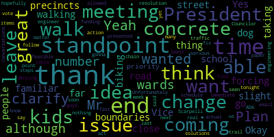

[Caraviello]: 33rd regular meeting of the City Council, October 19th, 2021. Mr. Clerk, please call the roll.
[Hurtubise]: Councilor Bears. Present. Councilor Falco. Present. Vice President Knight. Present. Councilor Marks. Present. Councilor Morell. Present. Councilor Scarpelli. President Caraviello. Present.
[Caraviello]: Assembly affirmative. Please rise and salute the flag.
[Falco]: I pledge allegiance to the flag of the United States of America and to the Republic for which it stands, One nation, under God, indivisible, with liberty and justice for all.
[Caraviello]: Motion thought as a resolution. Mr. President, at this time, I'd like to withdraw the paper. OK. 2-1-590 has been withdrawn by Vice President Knight. OK. 21591 motion for reconsideration offered by Councilor Scarpelli. Be it resolved that Councilor Scarpelli is requesting reconsideration of paper 21551. voted on for re-presenting. Councilor Scarpelli.
[Scarpelli]: Thank you, Mr. President. First, personally, it's the first time I've been back here for a while. I just want to publicly again thank my colleagues and the Medford community in supporting my family and my mother's battle and then just recently her death and I appreciate everybody for standing beside me and this brings me to this resolution. Last week, I really didn't want to miss another meeting. I jumped on Zoom. I was still with family and I was trying to do the city's work and as I went back and checked my notes, I realized that I listened to the question in reverse. So I made a mistake. I contacted Clark Curtabese the next morning and asked for reconsideration. So I know it was a lot of work, but my preference would be leaving it alone or looking at another section. So right now I'd like to reconsider and change my vote.
[Caraviello]: On the motion by Councilor Scarpelli for reconsideration, seconded by? Seconded by Councilor Marks. All those in favor? Aye. All those opposed? Motion passes. Mr. Gail, would you like to do another small presentation for Councilor Scott Pelham? Mr. President, I think it's unnecessary.
[Knight]: We know what the options are in front of us.
[Scarpelli]: I appreciate it, but I knew what Ms. Gail said, and unfortunately, I just listened to the question.
[Knight]: It wasn't the presentation that was questioned. Motion to adopt this plan that makes no changes, Mr. President.
[Caraviello]: We have to read paper 2551 again. Mr. Clerk, do you have that? Let me get the paper. Two, President Richard Caraviello and members of the Medford City Council, plans for redistricting. Because there was a motion for reconsideration, the three preceding maps presented during the last two Committee of the Whole meetings on September 20th, 2021 and October 5th, 2021, and at the October 12th, 2021 City Council meeting are provided on this meeting agenda. The full plans for re-precincting are available for view on the city clerk's office. Councilor Morell.
[Morell]: Thank you, Mr. President. Yeah, I just wanted to clarify. Plan A, although it's no change to the number of wards and precincts, there is slight changes to the boundaries of it. Okay, thank you.
[Caraviello]: So to make it clear, the council voted last week to adopt Plan A, correct?
[Morell]: No.
[Caraviello]: I mean, sorry, Plan C. C. Plan C. Okay.
[Marks]: So, Mr. President. Councilor Marks. So just if I could, Mr. President, a majority of this council last week voted for plan C, which was the most disruptive change to our polling places, added eight new precincts. Plan A is the least disruptive and plan B was what I would consider a middle of the road adding award nine to the Wellington area with some slight disruption. So I just want the record to reflect that, Mr. President. So we're going from the most disruptive, which a majority of this council voted for now to no change at all, more or less. So I just want the record to reflect that. Thank you, Mr. President. Do we have a motion on the floor?
[Caraviello]: On the motion by vice president say a second and by second. Seconded by Councilor Bears. Mr. Clerk, please call the roll. So this is to adopt plan A.
[Hurtubise]: motion to adopt.
[SPEAKER_10]: That's correct.
[Hurtubise]: Councilor Bears? Yes. Councilor Falco? Yes. Vice President Knight?
[SPEAKER_01]: Yes.
[Hurtubise]: Councilor Marks? No. Councilor Morell?
[Morell]: Yes.
[Hurtubise]: Councilor Scarpelli? President Caraviello?
[Caraviello]: No. For the affirmative, three in the negative, motion passes for plan A. Thank you. While we're on the suspension, 21-596, petition for a common victor license by Fagan Lee, 21 Ellington Road, Quincy, for Barry Lee, LLC, doing business as Asian Taste, 207 Middlesex Avenue, Medford. Licensing Chairman, Councilor Scarpelli is ahead. Do we have anyone from the restaurant this evening on the call?
[SPEAKER_18]: Yes, sir. If you can hear me, this is Attorney Wage on behalf of DLC with this pending application.
[Caraviello]: Okay, excuse me. Name and address of the record, please, sir.
[SPEAKER_18]: First name, W-E-I, last name, J-I-A.
[Caraviello]: Okay, Councilor Scarpelli.
[Scarpelli]: Thank you, Mr. President. As I reviewed all the paperwork, I know that everything seems in order. I know that this is a Asian taste restaurant on Middlesex Ave. Is this just a family run restaurant? I'm sorry. Are we changing anything that we have right now in the footprint?
[SPEAKER_18]: No, there'll be no changes at all. We're going to remain the same operating hour remains, and the liquor license transfer has been heard by licensing board. I believe it's now before ABCC. Other than that, there's no change.
[Scarpelli]: No, I see everything in order, Mr. President. So I request any additional comments from my colleagues.
[Caraviello]: Thank you. Vice President Knight.
[Knight]: Mr. President, thank you very much. If you recall, Some years ago, probably, maybe two and a half years ago, this council had passed a resolution requesting that the operators, not only Asian Taste, but the operators in that stretch of buildings, refrain from parking on the sidewalk. What was happening is people were using the handicap ramp as a driveway and driving up on the sidewalk because the sidewalk has a lot of width and a lot of space. The council had requested that bolus be put in and the bolus were put in. However, they will put him wide enough where vehicles could still drive up the handicap accessible ramp onto the sidewalk. So I just want to reiterate to the gentleman, I certainly have no problem with the license transfer. That's an enforcement issue that should be handled through enforcement. It's really a function of the city administration, not this council, to ensure the vehicles don't park on the sidewalk. But with that being said, with the license being transferred, I want to reiterate this council's position that that type of behavior is not something that we'd like to see there at that location, and we've taken steps and voted affirmatively on a number of occasions to install safety measures to prevent it from happening. So I'm hoping that, you know, as we move forward, Mr. President, that the representative for the business entity can convey the Council's concern relative to the parking circumstances and situations at that location and make sure that they refrain from parking on the sidewalk in that spot.
[Caraviello]: Thank you, Mr. Vice President. So, Mr. Lee, were you able to hear Vice President Knight's concerns?
[SPEAKER_18]: Yes, the comments is noted. We will let my client to make sure that the parking situations could be maintained according to the requirements. Thank you. I appreciate it. As a matter of fact, while we are working with the landlord, the landlord also raised this issue. So we are fully aware of this situation.
[Caraviello]: Thank you. Any further questions? Motion for approval by Councilor Scott Felly. Seconded by?
[Scarpelli]: Councilor Knight.
[Caraviello]: Seconded by Vice President Knight. All those in favor? Aye. All those opposed? Motion passes. Thank you very much, Chair, and enjoy the rest of your day.
[SPEAKER_18]: Thank you, gentlemen. Thank you.
[Caraviello]: Have a good evening. Okay, motion to revert back to regular business. On the motion by Councilor Bears, seconded by Councilor Scarpelli. All those in favor? All those opposed? Motion passes. 5-9-2 offered by Councilor Bears. Be it resolved by the Medford City Council that the Mayor and City Administration... Mr. President, I think we skipped Councilor Knights. 5-9... Oh, you withdrew? All right. being resolved by the Medford City Council that the mayor and the city administration hire a crossing guard on Fells Way West for the Robert school students and families who face a significant danger from high-speed car traffic on a daily basis. Councilor Betz.
[Bears]: Thank you, Mr. President. The resolution is pretty self-explanatory. The vast majority of the student age population of the Roberts School lives north of Felsway West. The Roberts School is south of Felsway West, and you have a lot of students and families crossing that street every day. As a resident of Felsway West, I can tell you that people speed down our street very regularly, going as fast as 35, 40 miles an hour. There have been a lot of near misses, a lot of close calls. with elementary school students who are you know, facing risk every day, just trying to go to school. We do have Safe Routes to School and other projects that are underway to make that stretch safer. But in this specific case, I think it would be really good to have a crossing guard over at, on Fellsboy West, at one of the, maybe one of the new crosswalks, just to allow for safe passage for all of these students to the Roberts School. And I would move approval pending discussion. Thank you.
[Knight]: On the motion by Councilor Bears, seconded by Councilor Scarpelli. Chair recognizes Councilor Falco.
[Falco]: Thank you, Mr. President. Thank you, Councilor Biez for bringing this forward. This has been an issue for many years, and I know we've tried to address this in the past. Crossing at that intersection is dangerous to begin with any time of day. People are racing to get to the highway, and this is something that definitely needs to be addressed. So I am definitely in favor and in support of this resolution, and I move approval. Thank you for bringing this forward.
[Knight]: On the motion by Councilor Behr, seconded by Councilor Scarpelli. All those in favor? Aye. Opposed? The ayes have it. Council paper 21593, offered by President Caraviello. Be it resolved, the Medford City Council have the DPW and administration replace the sidewalks from Brook Street, on the Brook Street from Harvard Street to Irving, replace the sidewalks on Brook Street from High Street to Irving Street. We're looking at comes to go. Thank you in the interest of public safety. My apologies for butchering that to death. The chair recognizes Councilor Caraviello.
[Caraviello]: Thank you, Mr. President. Last week, I was followed by a few residents up that lower end of Butch Street to go up there and look at the sidewalks there. When I got there, half the street has a sidewalk, the other half is going up toward the Irving Street side. There's no curbing. It's just plain tar. There's certain parts on the other side of the street. that have they have holes holes in the sidewalk and there's been no curbing nothing that in this disabled residents but also lives on that side of the street so I would ask that the administration replace those sidewalks in curbing in the interest of public safety and I think we have some people here.
[Knight]: They want to speak on that this evening. Absolutely and if I may miss the copy of the law in the morning it is a very difficult street to drive down because that's the way I take my kids to school and that's very difficult to be able to pass the same time going up and down the street. Before we just recognize, is there any Councilors have any comments that they'd like to add? We open it up to the general public.
[Unidentified]: Name and address for the record, please.
[SPEAKER_06]: I think we all want to say a little bit of something, but we've all talked together. So I'll go first and then I'll sort of pass it along to name an address for the record. Sure. Good evening. My name is Catherine Cohen and I live at 15 Brooke street in Medford. I'm the mom of twin three-year-olds. For my family, sidewalks, traffic speeds, and safety are all directly connected. My house is positioned very close to the street, and without curbs to serve as a safety buffer, people park right on the so-called sidewalk, as you saw, basically at the front of our stairs, making it impossible to maneuver a twin stroller. As a result, most days I end up taking my twins in the stroller out into the street, Additionally, there are sinkholes in crumbling asphalt. You'll hear a little bit from Rosemary who has fallen in those sinkholes and I believe made a complaint with the city but received no response. There's also a neighbor who recently, you'll hear from, stepped in a pothole or even a sinkhole and really severely injured herself. And I do want to also talk to the speed, which you talked about. Cars gather momentum at the very, very top of the hill, and so by the time they're at the bottom of Brooks, they are going so quickly and seem to hit the accelerator once they hit our lower Brooks. We're right in the Brooks Elementary school zone, and there are so many kids that come through our streets every single day with families and child residents. multiple accidents, car accidents have already occurred due to the speeding and the blind spots created by the dense parking, because people park on both sides of the street. It's such a narrow street, and there's people parked on both sides of the street, and then it's also two ways, so it just makes basically no sense. So because there are no curbs or true sidewalks on the majority of the street, cars take over, they park on what should be the sidewalk, artificially widening the street, and then traffic thinks they can go even faster, because it's been widened. So it really creates a hazardous, vicious cycle. And we have some potential solutions. So I'll pass it to my neighbors.
[SPEAKER_00]: Name and address for the record, please, sir. Good evening. My name is Timothy Conant. I live at 20 Brooks Street. We have some potential solutions that we discussed as a block. And some of the residents of our street have met to discuss possible solutions. Among them, we have discussed speed bumps, installing real curbs on the entire block, which can be coupled with a custom size narrower sidewalks that will not impact parking. Consider one-way traffic on Brooks between Irving and High, like many other blocks in the neighborhood, which feed onto busy arterial streets. And possibly do not enter except for a resident sign on the corner of Irving and High to prevent traffic flow, heavy traffic flow. Do not enter during certain times of the day, busy traffic times, rush hour. Many examples in the neighborhood are streets that are like that. It would be helpful if curb sidewalks were installed because the street becomes narrow, forces traffic to naturally slow, thereby breaking the cycle. That would be helpful to do. And a 24-7 permit parking to prevent non-residential parking. And a stop sign at the corner of Brooks and High Street. There's never been one there. They zip down the street and people don't stop at the crosswalk, endangering kids going to Brooks School, pedestrians just walking back and forth from across across high street. Thank you. I have I'm a I'm a dad. I'm a grandfather. We have grandchildren visiting us. It's a dangerous street when we get out of the car because we park on the street. Thank you.
[Knight]: Name and address the record, please, ma'am.
[SPEAKER_12]: Hi, I'm Catherine Arita, and I live at 7 Alston Court, and I also park on Brook Street. Alston Court is just a little bit behind Brook Street. And like Tim, my husband and I park on the street. We have two little kids, ages six and ages one. Getting my one-year-old out of his car seat is scary because people come tearing down the street. Not having sidewalk space is difficult for our strollers, difficult for us when we're taking a walk. Um, I think the lack of curves on the sidewalk actually make parking more of a challenge for people because the street is such a mess that people try to avoid all the divots and the sinkholes kind of creating less parking instead of more parking. So I'm here in solidarity with my neighbors and hope something can be done. Thank you.
[SPEAKER_09]: Hi, my name is Rae Rae Geldart and I live at 19 Brook Street. I live right in front of the worst sick hole ever. I also do dog training and I work, manage a Starbucks right next to Mystic Valley Parkway. There are so many other issues, but if we could solve this one, when I first moved into this house two years ago, I was like, just shocked that it is on a hill. and that the water flow would naturally create more and more problems. But also the fact that I walk dogs, I've been able to actually see the fact that you guys are all fixing other streets. But on the street, it's one, it's next to a school. Two, it's on one of the biggest hills. Three, there's families right here and there. And guess what happened to me last week? I actually just fell right into one of those divots and my body is my bread and butter. I could not even believe the amount of scare I had. that if there was a curb that goes, this is the end of the sidewalk, you step, I would, I had to go, I had to take time out of work. I also had to pay for the doctor's bill. Nevermind the absolute scare that everything I was going to have to do was wrapped up in the fact that this would have been a really easy fix if you guys did this. But to furthermore, the amount of fixing you guys are doing already It seems to be of a travesty or a loss or an oversight that is not part of the process of what you're fixing among all the other streets I already see you working on. And I really see all the streets because I walk many hours all over Medford. I believe in your power to do right. And this should really be something that is a focus being that it's already next to a school. It's already next to a hill. We've already seen the amount of water that is coming from the onset of the weather that is only going to further erode these roads. I can't imagine how much the salt is gonna make these potholes bigger. And I am myself, I'm like, person who never falls. And the fact that I fell, I was like, that's it. I just gotta say, it's a really simple fix. I'm surprised we need a council meeting to do this. because you're already fixing other roads, I would have thought this would have already been on the agenda.
[Knight]: Name and address for the record, please, ma'am.
[SPEAKER_11]: Rosemary TN 19 Brooke Street. I guess what I'd like to say is that, you know, the street is now And so the cars parked along the sidewalk. So then you'd have to go out into this narrow street around the cars. I mean, I've often had to walk all the way down to High Street in the street because the cars were on the sidewalk. And I can't get through without walking into the street. So I think it's a very bad idea. I hope that we can do something about making it illegal to park on the sidewalks.
[SPEAKER_09]: I need to just furthermore, these massive gaps that are like, I don't even know, eight to 12 inches deep are directly in front of her house. And that's what we're looking for. It's a co-incident? I don't know.
[SPEAKER_20]: My name is John Beaubret. I live at 24 Brook Street. I came down to the council meeting prior to the pandemic and asked to have the sidewalks looked at. And you told me that they would be looked at and they would be taken care of, and they have not been taken care of. As far as I know, DPW has never come up and looked at them, and they haven't been repaired. I can give you a lot of history about the street. I've lived there all my life. And the reason why cars park on the sidewalk is because there are no curbs. And 25 years ago, 30 years ago, my mother got a ticket for parking on the sidewalk and you cannot tell the sidewalk from the street up there. So, They, she came down here to the council meeting, they decided that parking a little bit on the sidewalk was okay, but they don't park a little bit on the sidewalk anymore. In front of 5 Brooke Street, they take up the whole sidewalk to park down there. It's just been very, it's very dangerous. You know, I hope something can be done about this.
[Knight]: Is it what you see in residents in the neighborhood that live in these houses, or is this? Yes, yes. Is it also commuters, or?
[SPEAKER_20]: In front of 5 Brooke Street, there are people that live in those houses down there, and they block the whole sidewalk. And poor Rosemary can't walk. That's on her side of the street. She can't walk down the street. She has to actually cross Brooke Street in order to get on the sidewalk. There's a piece of sidewalk that's concrete. And that part of the sidewalk is fine. And she actually has to cross the street to get on that concrete part of the sidewalk to get down the street. And it just shouldn't be that way. Mr. President.
[Marks]: The chair recognizes Councilman. Thank you, Mr. President, and first I'd like to state that parking on a sidewalk is illegal in the community, it needs to be enforced. So that's the first thing, parking on a sidewalk is illegal. Secondly, Mr. President, I believe I was the one that offered the motion back before the pandemic. to have the administration go out and take a look at the sidewalks and curbing and the condition of that street. Not to pass the buck, but all we can do is make recommendations. So even if we vote tonight to have your street repaved, every sidewalk fixed, all the curbing, it does not mean it's gonna take place. It has to be the city administration. So just so you know, that's what we're up against. So we can offer all the resolutions we want, but ultimately the day-to-day operations of the city and where the streets get done is up to the city administration. So the fact that you said that you see all these streets getting done and so forth, that is not this council. That's the administration. Excuse me? The city administration know the council is the only open forum but you know I would highly recommend that residents reach out to the city administration and let them know the concern. I'm sure we'll all reiterate it tonight here, but I just want people to be aware that the buy in has to be from the city administration. It was this council that offered the ordinance was actually my ordinance that reduce the speed in the city from 30 to 25. And that was done through city ordinance, which we have control over. So the council did take action. when we heard about the speeding throughout the community. This council did take action on a number of issues, i.e. being not speed bumps, but raised crosswalks. They're more effective. And we started a pilot program back some years ago, and we did one on Winthrop Street, close to Boston Ave, and there was supposed to be a number of other raised crosswalks. This would be an ideal place for- for a raised crosswalk. However, the city has failed to act on that. So it wasn't this council, the council made recommendations, the city has failed to offer these traffic calming approaches. So this council, in my opinion, has been very proactive, talking about curbing, widening sidewalks to reduce speed, lowering the speed limit, which we did, and tried to get ahead of the cut through traffic and the speeding that's going on. I think we all agree that something in the area needs to take place and I'm sure my other council colleagues will make comment as well. But I just want the residents to know that if it was up to this council, it'd be done next week. Unfortunately, it's not up to this council.
[Knight]: I'm going to recognize a few of the councils that have some commentary that they'd like to say, and I'm more than happy to give you another opportunity to speak. The chair recognizes Councilor Scott Peller.
[Scarpelli]: Thank you. And thank you, Councilor Marksley, for bringing that up. And I think these are the issues and concerns we have because You know, today it's our friends from Brooks Street. And last month is our friends from Fulton Heights. Another one, we'll get one from South Method. So we're hearing you. But what I'm gonna suggest today, something that we see that works, I think was Council Falco that brought this up in the Fulton Heights area, is that we call for a meeting with all the parties involved, city administration, traffic engineer, traffic department, police chief, and really have a meeting at the site. And I think we did that and was it Fulton Fulton Spring Road. And some of the things we talked about some of the traffic common measures, measures, weren't as extensive or expensive or time consuming like we're talking about because It doesn't sound like it's, it's obviously what it is very unsafe, and especially for neighbors that that can't traverse their own front of the house I think it's it's a disgrace. So, I think that with this council's support that we call for a meeting relatively soon and whether it's getting bad but We do it at the location. And we talk about some of the traffic calming measures. For instance, stop signs, making sure lines are painted. Not the raised sidewalks, but if it's a long direct street that in other parts of the neighborhood, we see them in Lawrence Road. It's the, not a speed bump, but do you recall the name? The speed table? It's where it's raised, where there are lines painted on it, where people can see it as it's coming up. So it's not drastic. uh, bump, but it's, it's, it's risen. So you have to slow down. So then we could talk about, you know, one way the do not enter what the process is for doing a one way. I think that we can do because this council could present it all and what we'll do tonight, I'm sure we'll all send this out to the city administration and then we'll get a little piece of paper next Tuesday and it'll say, you know, from the mayor's office who they sent it to and Unfortunately, once we get to that point, we're left with. a year later, a constituent coming back and saying, thank you for putting on, but we haven't seen anything yet. And I think that that needs to be followed up with a better format. But what I'm trying to say is, I'll make the motion tonight that we call for a meeting at the location with all of the parties that need to be there, whether it's city administration, chief of police, traffic engineer, DPW. DPW, of course, so we can get things, you know, we'll reach out to DPW direct tomorrow and we'll ask them to at least go to where the areas are where there are giant potholes where we have neighbors falling in 12 inches that they can patch those right away. I can't see why that's something that we can reach out quickly for, but- What did I mention? Yeah, sorry.
[Caraviello]: Councilor Scarpelli, with all due respect, they're not patchable. These are just eroded sidewalks that were hot topped at some point. And the hot top is just, because they're on the lower end of the hill, the water keeps coming down, washing it away, washing it away. And the major part of the problem is, if they had a sidewalk that's supposed to be there with the curb, the street wouldn't be as wide and it would slow the cars down on its own. So again, which is- which is its own traffic calming measure.
[Scarpelli]: So the resolution, Mr. President, the resolution is to have the meeting and get all the parties involved so we can do an on-site visit so you're not running around talking to this body that unfortunately, I wish I made the call that said, let's go do that because there were 30 last year that we asked to fix too. listen, it's not good. We know that. So I believe me, I apologize, but this is getting frustrating for us too. So that's why I asked my colleagues to join me in voting to have an onsite with all the, all the department heads that need to be there.
[Caraviello]: Thank you. Yes. If we could have the disability in front of this, this woman's house is a pretty decent size hall.
[Scarpelli]: Yeah.
[Caraviello]: And I say, I was down there.
[Morell]: Thank you, Vice President, and I want to thank you all for coming out here. When my dog wants to walk that far, I walk down there, I'm forcing the road. It's the same thing. I'm very familiar with the issues that go on there. And you would think that because it's so close to the school, because kids are walking, they're biking, people are taking their kids down the street, that it would have priority. Unfortunately, we haven't seen that yet. I think Councilor Scarpelli's resolution is a great idea because what these meetings have allowed us to do, you guys presented so many great ideas. You can be there in real time with the traffic engineer and they can say here's what's feasible here's what's not from a ADA point standpoint from an engineering standpoint from a funding standpoint, and we were able to leave with some concrete solutions. The last time we did this so I know it's not an immediate fix, but hopefully we can schedule that very soon because we're able to leave with actual action items that we can follow up on. Because otherwise, like you said, we can vote tonight, we can end up on an email chain, we can end up on a paper trail, and we can end up with nothing. So at least if we have that meeting, we can have those conversations and have those concrete steps, because there's no denying it's a serious issue there. It's just a matter of how fast we're gonna act on it. So thank you all for coming out.
[Marks]: Point of information, Mr. President? Point of information, Councilor Marks. Mr. President, we also just got a correspondence from the mayor stating that the safe routes to schools at the Brooks was recently completed. And I would challenge that, Mr. President, because I don't think creating one route to a school, which there was some improvements made along High Street. without a doubt, some great improvements. But clearly, when you look in the neighborhood, I grew up off Irving Street, so I'm very familiar with the area. And I can tell you firsthand, Mr. President, many of those roads have been neglected for many, many years. And I think what you're seeing right now is a culmination of many years of neglect. And by no means would you consider this safe routes to school. Thank you.
[Knight]: The chair recognizes Councilor Caraviello.
[Caraviello]: Thank you. Thank you, Mr. President. Again, we've all had some great ideas here tonight. We're into almost at the end of October. and construction season is going to be ending real soon. And that's going to be the problem. These people are going to have to wait till next year to get this fixed. So though the meeting is great, I think the DBW should be down there tomorrow to make an assessment, because some of that stuff can be done fairly quickly. It isn't that hard of a job to put a sidewalk in in a few days. So again, if we do a meeting, the the it will be too cold to put to put the cement down on top of whatever they're going to put down there and they say they'll be left in the lurch until springtime so I'd ask that this be sent to the mayor's office to have the dbw down there. Before the end of the week look at this and have a report issued to us by next meeting these people will have some kind of answer on where they stand on getting this this street. Even not so much as three but at least the sidewalks put into somewhat working order, because, again, they'll just it'll just leave you around for next year, and they'll and they'll suffer all winter. So they'll dub and people just keep talking on the sidewalk so it's only going to get worse.
[Knight]: Mr. President, chair recognizes Council this.
[Bears]: Thank you, Mr. President. And I'll be brief, because I know you have things you want to say too. Certainly I support what Councilor Caraviello said, there should be some sort of emergency addressing the issue. But as you know, that'll be a short-term fix because it's a serious problem. And I just want to add context, and I appreciate the context that Councilor Marks added earlier. If we're talking about drainage and new sidewalks on the road, we're talking about a full rebuild, right? We're talking about a full rebuild of that stretch. That's in the millions of dollars, you know, if we're going into the catch basins. And just to provide you context, and I know, because it's an important discussion that we're having as a community, we just had a report issued, roads and sidewalks report, that says we have over a hundred million dollars in roads and sidewalk backlog just to get up to to a standard level. Our road repair budget is about, and I think road and sidewalks together, it's about a million to a million and a half dollars a year. So it's a budget issue. It's a resources issue. And when we talk about neglect, It's neglect all over the city for decades where we've been deeply underfunding this question of safe roads and sidewalks. So I just wanted to put that figure out there. So you understand, we have a huge problem across the city. We're putting, you know, if we have the budget we have now, we'll solve it in a hundred years. And as we know, things are gonna get worse. You know, that's not, we're never gonna, a hundred years, we'll never solve that problem. So it really is a huge budget question of what the city is doing to address this massive backlog of road and sidewalk issues. So I certainly support an urgent fix to try to get one foot deep sinkholes in front of homes, obviously, and having a site visit to see what we can do. But the real question is this broader question of how are we going to fix hundred plus million dollars of road and sidewalk backlog that's gone neglected for many decades. So I just want to put that out there.
[Marks]: Point of information, Mr. President. Point of information, Councilor Marks. Councilor Bears is correct, but the city does have linkage funding that we can use for infrastructure improvement. The city does have water and sewer enterprise account money, well over $6 million in surplus money that can be used for drainage. That's what the money's there for. Correct. And so there is money available to attend to these projects. It's the fact that there's no plan currently in the community to address these issues. So if residents can look and say, here's the list of projects that are on the list and your project is scheduled for this, this and this, then they'd have some type of idea. But as we heard already from residents that are going to see click fix or reporting it to the city administration, they don't even get a call back. So I think part of the disconnect is that there's nowhere to go to find where you are if you are on a list. And secondly, what may be available because there is funding available. We just got, I think it was Councilor Falco mentioned about the $48 million in the different uses that we're getting from the federal government. And one is for road and infrastructure improvements. $48 million, and there's no plan. You know, Councilor Falco could talk about it better than I can. There's currently no plan, but this is the money that's out there. The 6 million in water and sewer enterprise account is your money. It's an over-assessment for water and sewer, not to address sidewalks, but infrastructure, because the sidewalks is probably the cheapest thing, doing the drainage and so forth is the most expensive, but we have money there. So some of it is a disconnect, Mr. President. So I don't want residents to believe that we're never going to be able to get through this. There's money available. It's a matter of having a plan and working methodically through the plan.
[Knight]: Thank you, Mr. President. Commitment to investing in delivery of city and school services. Absolutely. The chair recognizes Councilor Falco.
[Falco]: Thank you, Mr. President. I want to thank all my colleagues. Everyone had valuable suggestions. And thank the residents for coming down tonight. That's the most important part is you coming down and letting us know what's going on on your street because you're the closest to it. You know the issues, the problems, what needs to be addressed. Councilor Bearson mentioned budgeting and budget issues. And of course that's always a concern, but safety is the number one concern. We need to make sure that that street is safe for everyone that traverses it. Like you said, it's near a school. That's always a huge concern. You have kids coming back and forth up and down the street all day. So you need to make sure everyone's safe. Councilor Scarpelli mentioned the onsite meeting. I am 100% support of that. That's the best way to get something like this done is to have all the department heads on site so you can talk to them, you can ask them questions, and then everybody leaves that meeting knowing what they need to do. and they hear it directly from you. That's one of the most important things we can do. We did that in other neighborhoods and it was very successful. It worked really well. And I second the motion of Councilor Scarpelli for doing that. And I would ask Mr. President, if you could schedule that as soon as possible, that is vital. And there are some things I'm sure that we could probably do right away, you know, looking at the stop signs, you know, painting stops, lines on the ground, stuff like that. That's simple stuff, but the longer term issues like drainage, sidewalks, that might be long term, but we need to make sure it gets on. We need to make sure that the DPW knows about it. I would ask that the city engineer be invited to that meeting as well. That is important that he's invited because when we talk about drainage, he needs to be part of that conversation. We have a lot of drainage issues throughout this community. More and more when it rains, there's more and more flooding. I'm not sure if you have flooding down in that area, but I know surrounding streets, I was down at a playstate in Usher, That was like a three foot swell. So there's a lot of issues that need to be addressed, but that onsite meeting is key. With regard to council, Mark said mentioned ARPA, there are ARPA funds available for infrastructure projects, especially if we're working on, you know, water main type stuff underneath the street. So maybe if it's due for an upgrade, maybe there's funding for that, but we would have to look into that further. And the city engineer needs to be at that meeting. as well as DPW, Medford Police, Traffic Engineer, they all need to be invited. But it's key that they're there, you're there as well to ask the questions. And like I said, everybody leaves the meeting knowing what needs to be done and what department heads need to work on what. I would ask that Mister President, if you could schedule that soon. We also have to remember that we do have an outstanding meeting with the residents on Cotting Street as well. That neighborhood is still waiting for their meeting. So we have a couple of these now.
[Caraviello]: I'm not sure if we can maybe do them on a Saturday, both on one day, but- Councilor Falco, the problem is getting the Saturday meetings with the traffic engineer and everybody. seems to be an issue right now. And in a couple of weeks, we're going to be turning the clocks back, and the 4 o'clock is going to be docked there. So I would even welcome doing it Sunday, if we get them down there on a Sunday also.
[Falco]: The bottom line is we just need to do it sooner than later. This really needs to be addressed. These are safety concerns.
[Bears]: Yeah. Mr. President, I would just second Councilor Caraviello's motion on the emergency fix by the end of the week.
[Knight]: Councilor Caraviello is the president who will be scheduling the meeting, so I think that is good. And we can get that emergency order over there to the DPW tomorrow. I think that's a good cause of action as well. Did I hear that Councilor Scott Bailey had a point of information? Councilor Falco, I do believe you're still on the floor.
[Falco]: Yes. So I just wanted to make sure. So as far as the offsite meeting or onsite meeting, I should say, so do we have the traffic engineer DPW met for police engineer? Uh, disability disability. Yes.
[Scarpelli]: Sorry about that.
[Falco]: Okay. And representative of the mayor's office.
[Knight]: I do think it's an enforcement issue. So traffic and parking should be there. Absolutely. We do have a new traffic, uh, manager of a new in-house parking. Program so she started yesterday they Morrison. So they welcome aboard is the second day of the job and we have some work to do. So with that being said I believe that everybody here in the audience said the opportunity to speak once it's wanted to is there anybody on the computer I just want to say that anybody in the computer that has not the opportunity to speak first. I see my friend Jake I'm asking on the computer doesn't want to speak. I think we have a couple of people here. Not just everybody had an opportunity to go once. I just want to say, please step right up and name and address for the record. If you haven't had a chance to speak yet.
[SPEAKER_10]: All right.
[SPEAKER_11]: Rosie, if you had a chance to say, well, I wanted to say it's parking on the sidewalk is illegal, but what force do I have?
[Knight]: I want to ask, I mean, call the police and I'm ready to take it.
[SPEAKER_10]: Okay, we can call the non-emergency line. Okay, so they can come by and take it. Yeah, it's an enforcement issue. Down the street. That's great. It's an enforcement issue.
[Knight]: I drive the street every morning taking my kids to school. I know exactly what you're talking about. It's a battle.
[SPEAKER_10]: All right, I'll be brief. My name's Christina Roberts. I'm at 21 Brooks. Thank you guys for hearing us in such large numbers. I took a couple pictures of walking my kindergartner to school. We had to go like out in the middle of the road where people turn off High Street. We'd, yeah, we'd just love to be able to walk down the street. So thanks for listening. We appreciate it.
[SPEAKER_12]: I just want to add.
[Knight]: Name and address for the record.
[SPEAKER_12]: Oh, I'm sorry. I'm Catherine Narita at 7 Alston Court. And so Rosie's absolutely right. People should not be parking on the sidewalk, but I also can understand why they're parking on the sidewalk because the road is too narrow to not park on the sidewalk. So if it was one way, this would be, and we had sidewalks, it would be a whole lot less of an issue.
[Unidentified]: The chair recognizes Councilor Scott Kellogg.
[Scarpelli]: be a two lane road. Maybe it should be one direction or where it could start going into two directions. So, you know, we could, that's something that, that's why we want everybody there because I can feel your frustration that where is the meeting? Do we go? If we don't can't do it here, where do we go? So we're trying to do now is we're bringing the meeting to you and let's get all your neighbors out. Let's get everybody out and let's let's let them speak because unfortunately some people there's actions when there's a crowd around them. And if that's what we have to do, that's what we have to do. And unfortunately, you know, my wife gets mad because I can't go apple picking again, but it's fine. I hate apples. So, thank you.
[SPEAKER_20]: The other issue is that there are no curves with people parking on the sidewalk. So you can't even tell you're parking on the sidewalk there. So that's another issue. And when we talk about decades, I've lived on that street for six and nothing's ever been done, ever. And, you know, the last thing was done was when they ripped up the streets to put the pipes in, the gas pipes in. And when they redid the streets, they didn't do it right. And that's the issue with them coming apart at the sidewalk. So thank you all for hearing us.
[Scarpelli]: It's such a cozy neighborhood, it looks like. So everybody's all tight and cooped together.
[SPEAKER_09]: Once again, my name is Ray-Ray Gilder, and I live at 19 Burke Street. I'm just saying, if a car was driving the usual speed it is, and when I fell out of my house and I smashed myself, a car could have hit me, okay? It was a real deal for me. And I've always known it's been a concern since I lived there. But I just know that you guys are the interim people. I get that. And I really hope they take it seriously because nobody wants to hear of anybody dying, especially a little kid, simply because there's a divot in the road that they could have fixed.
[Knight]: Understood. Okay. On the motion of Councilor Caraviello, as amended by Councilor Scarpelli for a site visit, COW, as further amended by Councilor Caraviello for the DPW to take immediate emergency action. All those in favor. Aye. All those opposed. The ayes have it.
[Unidentified]: Thank you. Thanks for coming.
[Knight]: Thank you, everyone. Thank you. Paper 21594 offered by Councilor Falco. Be it resolved, the Parks Commission be invited to participate in the car park revitalization meetings. The chair recognizes Councilor Falco.
[Falco]: Thank you. Thank you, Mr. President. There's been many meetings so far with regard to the car park revitalization. And one of the key, I think, know, boards that really should be involved in this is the parks commission. And they have not been involved in it. And I'm basically asking that the group that is actually having these meetings invite the parks commission to the meeting. When you think about at the end of the day, the parks commission knows the needs of the parks, the scheduling of the parks, what the demands are as far as scheduling and so forth. So they really should be part of this process and in the interest of transparency, they should be invited to these meetings. So I'd ask that the parks commission be invited to all future meetings with regard to car park revitalization. Move approval.
[Knight]: Thank you. That's an excellent recommendation. Councilor Falco and it's my hope also that we get a response from the administration in short order relative to our request for an advisor's advisory committee relative to that project as well. On the motion by Councilor Falco, seconded by Councilor Scarpelli. All those in favor? Aye. Opposed? The ayes have it. Chair awaits a motion to take papers in the hands of the clerk. Motion to take papers. Second. Papers in the hands of the clerk, Council Paper 21597, offered by Council President Caraviello. Be it resolved, the Medford City Council have the construction firm doing the work on Prescott Street, remove the trailer and backhoe equipment from the sidewalk on the corner of Alston Street in the interest of public safety. The chair recognizes Councilor Caraviello.
[Caraviello]: Thank you, Mr. President. So we're going from one end of the street to the other end of the street, which is on the corner of Prescott and Austin. I think you brought this up a couple of weeks ago about all the equipment that was left there. Well, it was gone for about a week. Now the backhoe is back there and the other things are back there. But my concern is on the corner of Austin and Prescott, Newport Construction has decided to park a trailer blocking the whole sidewalk and along with putting backhoe parts on there. And right down the street is senior housing. So bad enough they can't walk on the street because the street's all dug up and now they can't even walk on the sidewalk. I did call the engineer on Friday and I asked him to have them immediately remove it. I don't know what he did, but obviously it's still there. I did call the code enforcement officer to have it removed, still there. So I think at this point, I don't know what the next course of action is. It's been sitting there since last week. And I see the seniors that are walking now, they're walking in the middle of a broken up street. So it's just not fair. And again, it has to be removed immediately.
[Knight]: And I do believe Councilor Caraviello, as you stated yesterday when we were discussing this, that it does pose a public safety risk to the residents of 22 Alston Street. The question of whether or not fire apparatus and emergency equipment can traverse the lane with the way that the equipment is positioned is certainly concerning. Chair recognizes Councilor Falco.
[Falco]: Thank you, Mr. President. I wanna thank Councilor Caraviello for bringing this forward. I was in that neighborhood today and you are correct, it has not been moved and it is a public safety hazard and definitely narrows the road. It's dangerous, it's near the school, it needs to be removed. And I thank the councilor for bringing it forward and I move approval. Thank you.
[Knight]: Chair recommends Councilor Marks.
[Marks]: Thank you, Mr. President. I wanna thank President Caraviello for bringing this up. And as you mentioned, Mr. President, this was brought up over a week ago. And we have yet to receive any type of response from the city administration or any action regarding this. This is a very important public safety issue. It may not seem so, but these construction companies, these utility companies are coming into this community and they're running roughshod across the community. They really are. They're working at their own pace. They're putting their equipment wherever they want. and to the neglect of our community. And there's no oversight. There's no enforcement. And that's a concern, Mr. President. And because of all the construction, it's happening everywhere in our community. So I would hope that the city administration act pretty quickly on these public safety concerns. Thank you.
[Knight]: On the motion by Councilor Cairo-Viello, seconded by Councilor Falco. All those in favour? Aye. All those opposed? The ayes have it. That's the longest thing on the paper, now you're going to make me read this thing. You can't read it, it's mine, it's mine.
[Caraviello]: Thank you, Mr. Vice President. 2-1-595, offered by Vice President Knight. City of Medford, call for a municipal election Tuesday, November 2nd, 2021. Be it ordered that in accordance with provisions of general laws of Massachusetts and the revised charter of the city of Medford, and so far as the latter is applicable, the city clerk be, and he is hereby authorized and instructed to notify in one such of the inhabitants of the city of Medford qualified to vote and as the law requires to assemble at several polling places as designated in this order for and within several precincts where they are duly registered voters on Tuesday, November 2nd, 2021, then and there to give their ballots for election of respectively. One, mayor of the city of Medford to serve a period of two years from the first Monday in January, 2022 to be elected by and from the qualified voters of the city of Medford at large. seven members of the Medford City Council to serve a period of two years from the first Monday in January, 2022, to be elected by and from the qualified voters of the city of Bedford-at-Large, six members of the Medford School Committee to serve for a period of two years from the first Monday in January, 2022, to be elected by and from the qualified voters of the city at large, and be it further ordered that the following name polling places be and they are hereby designated to be used at the municipal election to be held on Tuesday, November 2nd, 2021. The said polling places to be open from 7 o'clock a.m. to 8 o'clock p.m. Voting precincts, Ward 1, Precinct 1, Andrews Middle School, 3000 Mystic Valley Parkway, Ward 1, Precinct 2, Firefighting Club, 340 Salem Street, Ward 2, Precinct 1, Roberts Elementary School, 35 Court Street. Ward 2, Precinct 2, Roberts Elementary School, 35 Court Street. Ward 3, Precinct 1, American Legion, 321 Winthrop Street. Ward 3, Precinct 2, Temple Shalom. 475 Winthrop Street. Ward 4, Precinct 1, Tufts University, Cousins Gym Entrance, 161 College Avenue. Ward 4, Precinct 2, Wackling Court, Auburn and North Street, Fondacaro Center. Ward 5, Precinct 1, Mississippi Elementary School, former Columbus Elementary School, 37 Hicks Ave. Ward 5, Precinct 2, Mississippi Elementary School, former Columbus Elementary School, 37 Hicks Ave. Ward 6, Precinct 1, West Medford Fire Station, 26 Harvard Avenue. Ward 6, Precinct 2, Brooks School, 388 High Street. Ward 7, Precinct 1, Mystic Valley Towers, Mystic Place, 3600 Mystic Valley Parkway, North Building Entrance. Ward 7, Precinct 2, McGlynn K-8 Public School, 3004 Mystic Valley Parkway. Ward 8, Precinct 1, Senior Center, 101 Riverside Avenue. Ward 8, Precinct 2, South Medford Fire Station, 0 Medford Street. Councilor Falco.
[Falco]: Thank you, Mr. President. If I may. Ward 2, Precinct 1, Roberts Elementary School. I know that changed for the primary. Is there a robocall that's going to be going out for those people that, basically everyone in Ward 2, Precinct 1, since some people may not have voted in the primary, I would think another robocall should be going out.
[Hurtubise]: There will be another one going out, yes.
[Falco]: Okay, there will be a robocall going out?
[Hurtubise]: Yes, there will be another robocall going out on that, yes.
[Falco]: Thank you.
[Knight]: I do think it might make sense if we're gonna do a robocall, that we do a robocall across the whole city and tell everybody where they vote. I mean, if we have the capability and capacity to do it, it might make sense, right? Saying, Hey, you know, Adam heard of these would do one new vote at the firefighters club. Just something to throw out there.
[Falco]: If I'm correct, this is the first municipal election where the residents in three, one will be, will not be voting at LMH. They'll be voting at. uh, the, uh, yeah. So I would think that, you know, they should probably get a robocall as well, since this is the first municipal election.
[Hurtubise]: If I can interrupt for a second, I apologize for interrupting, but we're required to notify voters when we change the polling place, which is, which is why we have to do the reverse 9-1-1 anyway. And we did that for when we moved from Lawrence Memorial to the American Legion, we did that as well. So I can request from the administration any robocall you would like, but we are required to do one for the Roberts.
[Caraviello]: Okay.
[Knight]: I would make the suggestion that citywide then.
[Caraviello]: Okay. So on the motion by Vice President Knight, as amended by Vice President Knight and amended by Councilor Falco. Roll call vote, Mr. President. Seconded by Councilor Bears. Mr. Gregg, please call the roll when you're ready.
[Marks]: And the motion was to do a citywide robocall, correct?
[Knight]: Yes. And approve, right? I mean, approve the polling locations and do the robocall.
[Hurtubise]: One second. Councilor Bears? Yes. Councilor Falco? Yes. Vice President Knight? Yes. Councilor Marks?
[Bears]: Yes.
[Hurtubise]: Councilor Morell? Yes. Councilor Scarpelli? Yes. President Caraviello?
[Bears]: Yes. Assembly affirmative, motion passes. Mr. President, motion to take paper 21-548 off the table for its third reading.
[Caraviello]: Second. 21-548. 21-548, amendment to the revised ordinances, offices and employees, scheduled to take its third reading this evening. Bill, on the motion by Councilor Bears, seconded by? Seconded by Councilor Morell. Mr. Clerk, please call the roll. For third reading? For the third reading.
[Knight]: brief explanation of the paper, Mr. President. Mr. Clerk, do you have the original paper?
[Marks]: I don't, but I could not get it.
[Caraviello]: These were decided on different cap ordinances. I do not have the... Want to take a brief recess as a clerk and get the paper and I can give you a brief synopsis. So on the motion to take a five minute recess.
[Knight]: I don't think we need to do that, Mr. President, but if I remember correctly, I think this is the paper that creates the caps for the station manager. Yes. For the Department of Parking. Yeah. Yes. And a couple of those are the ones.
[Caraviello]: Yeah, so if we're happy, on the motion by Councilor Bears, seconded by Councilor Morell. Mr. Clerk, please call the roll.
[Hurtubise]: Councilor Bears? Yes. Councilor Falco? Yes. Vice President Knight? Yes. Councilor Marks?
[Unidentified]: Yes.
[Hurtubise]: Councilor Morell?
[Unidentified]: Yes.
[Hurtubise]: Councilor Scarpelli? Yes.
[Caraviello]: President Caraviello? Yes. 7 in the affirmative. Motion passes.
[Hurtubise]: I know that the mayor is working on these appointments because I had a meeting with the mayor about this topic this afternoon. There is going to be, it sounds like there's going to be at least one appointment coming your way for next week, but I have to clarify with the mayor before, I can't commit to that, but it sounds like there's going to be something on for next week's agenda.
[Falco]: And if I may, they need to be appointed before the election, correct?
[Hurtubise]: At least one of them does to have a quorum, yes. Which is why we're trying to get it on for next week's agenda. At least one? At least one, yes, to have a quorum.
[Falco]: Do we know if she's working towards the second one?
[Scarpelli]: Yes.
[Hurtubise]: Yes. I had a meeting with her today.
[Falco]: And how does it have to be separated again? It's bipartisan, right, if I'm correct?
[Hurtubise]: Yes, the two vacancies are Republicans.
[Caraviello]: Public participation, Edward F. Linehan, 64 Farrer Street, Method Mass, to talk about Veterans Office Matters staffing and veterans concerns. Mr. Linehan, good evening. Name and address for the record, please.
[E3nlU10YCrs_SPEAKER_04]: Edward Linehan, 64 Farrer Street, Method. United States Navy veteran. Couple of things I'd like to say tonight, couple of quick comments. First of all, I would like to thank the administration for reinstating our veteran services officer, Michael Dorham, and realizing their miscalculation on the issue at hand. Second, I would also like to say that all future violations to veterans benefits will be a result of a strong opposition by the veterans community. Thank you.
[Caraviello]: Thank you, Mr. Linehan. Any other further business?
[Knight]: Minutes.
[Caraviello]: Records. Before we do the records, early voting starts next week, Mr. Clerk, am I correct? Early voting starts Saturday of this week. So early voting starts Saturday of this week. Mr. Clerk, would you like to give the dates of early voting for next week?
[Hurtubise]: Absolutely. This coming Saturday from 9 to 5 right here in the council chambers. followed by Monday and Tuesday from 8.30 to 4.30 in the council chambers, Wednesday from 8.30 to 7.30 right here in the council chambers, and Thursday, 8.30 to 4.30 right here in the council chambers. There is no early voting on Friday of next week, so it's Saturday, Monday, Tuesday, Wednesday, Thursday.
[Knight]: Thank you, Mr. Clerk. Mr. Clerk, will we be able to conduct that meeting on Tuesday evening with early voting?
[Caraviello]: Yes, you will.
[Knight]: Thank you very much.
[Caraviello]: Thank you. Any further business before we go to Ricketts? Okay, records of the meeting of October 12th, 2021 were passed to Councilor Morell. Councilor Morell, how did you find those records?
[Morell]: I did not have time to find them, if we could table them for next week.
[Caraviello]: So Councilor Morell has motioned to table the records of the meeting of October 12th, 2021. So on the motion by Councilor Morell to table, seconded by Councilor Falco. All those in favor?
[Bears]: Aye.
[Caraviello]: Motion to adjourn by So much second. Second by Council is all those in favor. Aye. And I'll oppose motion passes meeting adjourned.
|
total time: 15.29 minutes total words: 2112 |
total time: 6.02 minutes total words: 1131 |
total time: 6.21 minutes total words: 1046 |
total time: 7.07 minutes total words: 1346 |
|
total time: 1.41 minutes total words: 319  |
total time: 7.47 minutes total words: 1242 |
total time: 3.23 minutes total words: 602 |
|
{kind=link}
{kind=link}
{kind=link}
{kind=link}
{kind=link}
{kind=link}
{kind=link}